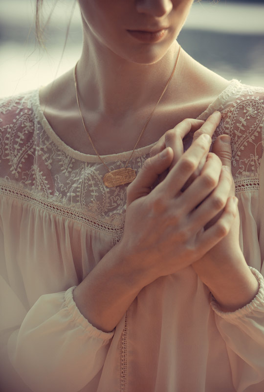
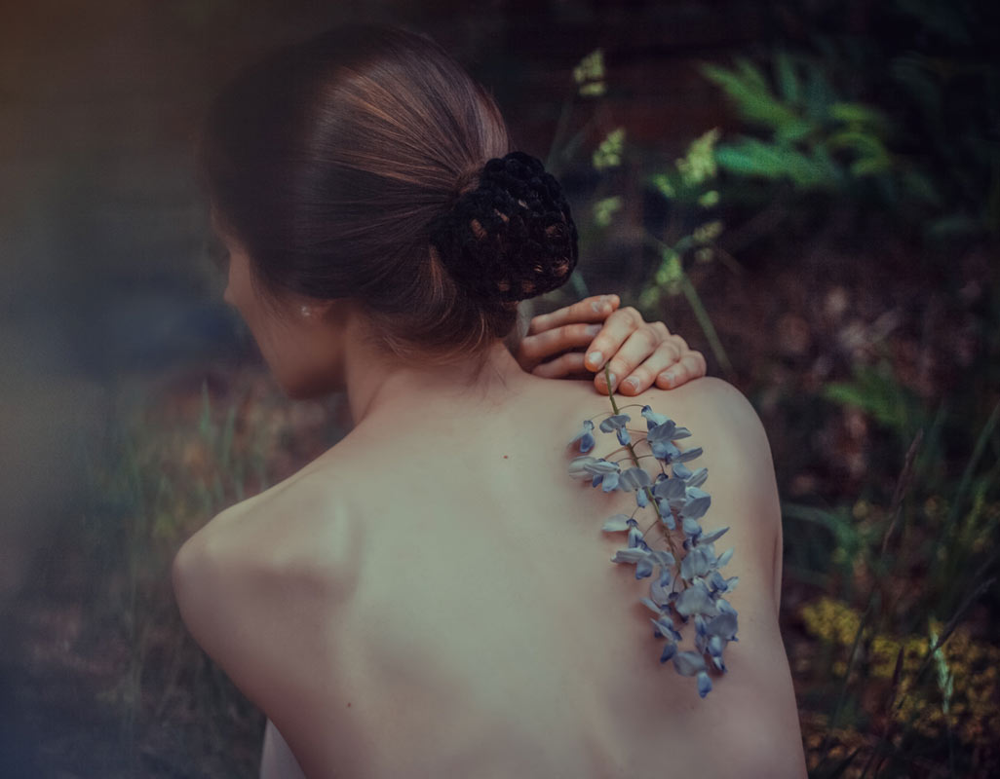
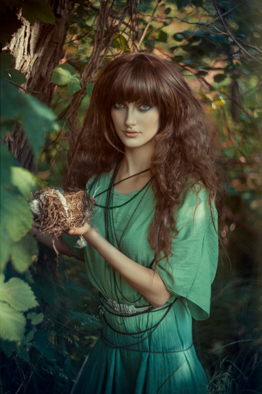
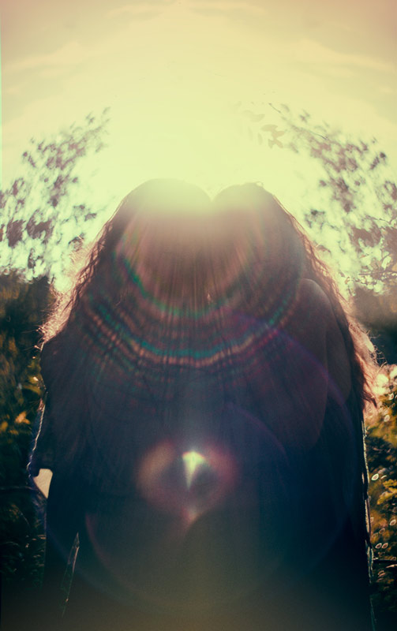
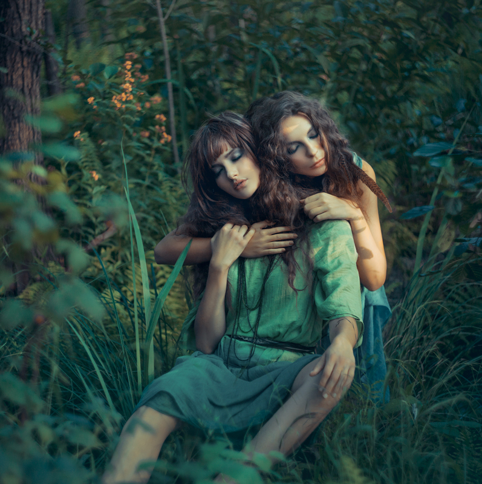
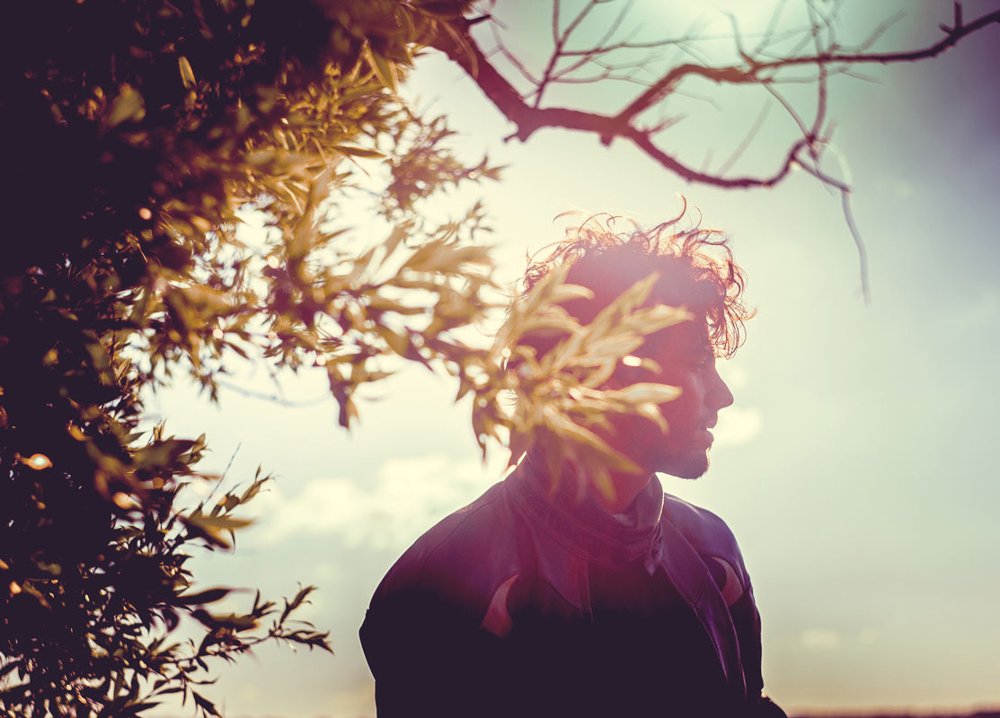
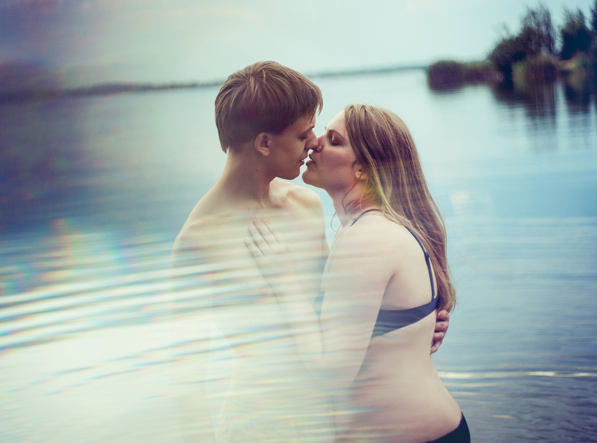
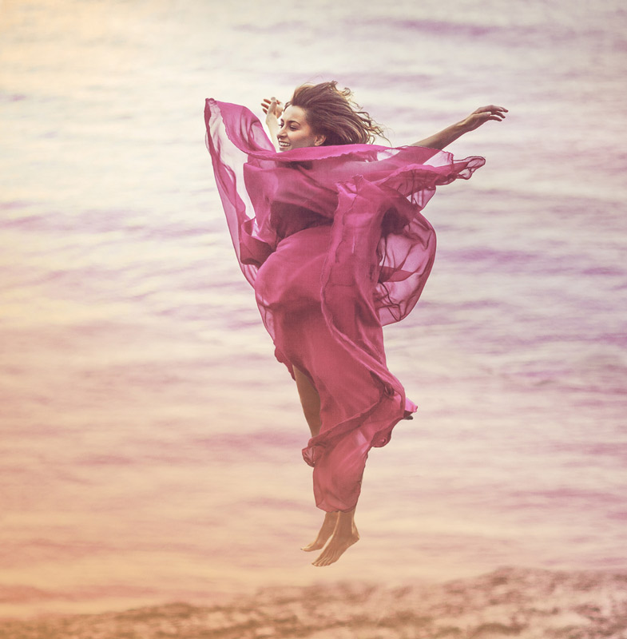
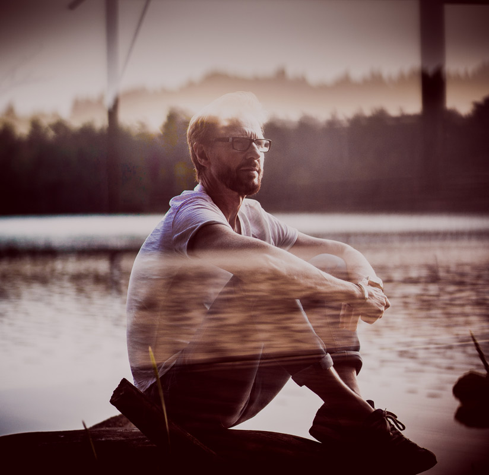
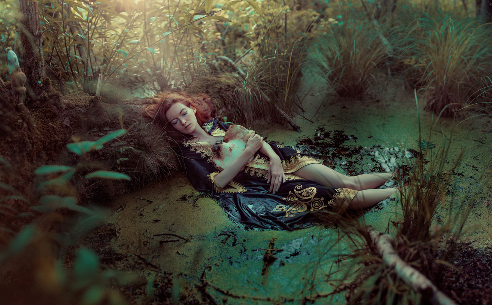

-
A fragile nature
Natural portraits
Mainly commissioned, portraiture projects took me to the heart of human existence: nature itself. In a subtle, natural surrounding, intimate sessions create fragile, dreamy and contemplative images of the characters to catch a glimpse onto their personal grace.2015 - ongoing

Anna - The pianist
- 
Anna - Chopin's Heart

Anna - Ballerina
- 
Anna - Take me to heaven
- 
Svenja - Rainbow Child
- 
Svenja & Ronja - Witch wood
- 
Svenja & Ronja - until we melt
- 
Lucas - Faunus
- 
Denise & Stefan - Into you
- 
Gergana - The escape
- 
Frank - Driftwood
- 
Maike - My heart and soul